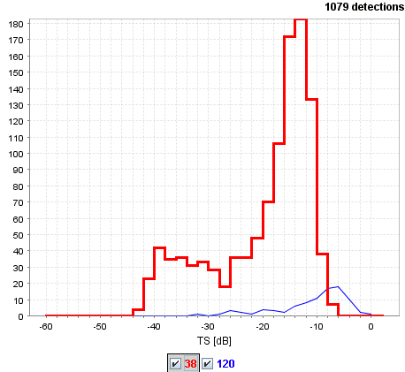

The purpose of the TS module is to visualize the target
strength distribution of the detected single targets in the active
regions. The distribution for the currently active frequency is shown
with a thick piecewise histogram-like curve as shown below. To avoid a cluttered plot,
the distributions for the other frequencies are shown with piecewise
linear curves.

The TS locations overlay
can display the positions of the detected targets in the echogram.